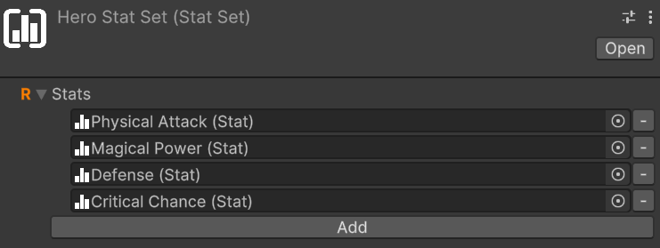

Workflows
Creating instances of the objects
All the scriptable objects provided by the framework can be created through the Unity Editor by either right-clicking in the hierarchy and selecting Create > Soap RPG or navigating to the Assets menu at the top of the window and choosing Create > Soap RPG.
Mandatory and re-play fields
Fields marked with a red asterisk (*) are mandatory and must be filled out to ensure proper functionality of the framework.
Fields marked with an orange R are re-play fields. Any changes made to these fields during playtime will require a restart to ensure the changes take effect.
Some utilities
Almost every class provided by this package uses events or variables in the form of ScriptableObject. Therefore, let's quickly introduce these concepts so that we are clear about what we are talking about when we encounter them in the following paragraphs.
Game events as ScriptableObjects
The SOAP architecture allows us to implement the Observer pattern through scriptable objects. In the simplest case, with events without context, we can define various game events as GameEvent instances: a class that derives from ScriptableObject. For example, we can create an instance called PlayerJumped that represents the event "The player has jumped". This event will notify all listening systems when it occurs.
Systems subscribe to this event using the MonoBehaviour GameEventListener. We can assign a GameEvent to this component, and it will handle the subscription and invoke a callback when the event is triggered. The callback is a UnityEvent, so we can select a callback to invoke in response to our event directly from the inspector.
For more details, see the Game Events section.
Int and Long Vars
Another common use of ScriptableObject in the SOAP architecture is to define variables. The main advantage of these variables in the form of SO is that they can be easily shared between various objects that may decide to share the same value. A common example is the player's game score. There could be a game manager that adds or removes points from this variable, while the UI HUD uses it to display its value on the screen. This way, we can keep the game manager and UI completely decoupled, passing shared values (like variables) through the inspector.
Int and Long Refs
IntRef and LongRef allow choosing whether to use a native value (int or long) or an IntVar/LongVar. As mentioned in the previous paragraph, IntVar and LongVar have the advantage of being shareable between different components/game objects, while native values are more immediate to use and require less setup (no need to instantiate an IntVar/LongVar and assign it in the inspector).
Thanks to a custom property drawer, it will be possible, from the inspector, to check a checkbox named Use constant to use a native value instead of a Ref, and vice versa.
IntRef and LongRef are widely used in the package's MonoBehaviour.
Game events
The package also supports game events with up to 4 context parameters. They are generics, but in Unity, it is not possible to instantiate classes that derive from ScriptableObject if they are generics with unspecified type parameters. To use them, we must explicitly declare classes that derive from the generic GameEvent and fix the type parameters with concrete types. To simplify the definition of new event types, with specific types as context parameters, the package provides GameEventGenerator. These generators, which derive from SO, allow generating the concrete classes of GameEvent.
We will see these generators in more detail in the section (TODO).
Some game events are already defined and made available by the package (see the Samples page).
Growth Formulas
Relative path: Growth Formula
As already mentioned in Introduction, GrowthFormula allows defining how a certain value varies as levels increase. A GrowthFormula can be instantiated through the hierarchy context menu by going to Simple RPG Core -> Growth Formula.
The package provides a custom property drawer for GrowthFormula.
Max level for the values
In the inspector of a GrowthFormula, we can pass an IntVar to define up to which level to grow the values.
Use constant at level one
If the checkbox named Use constant value at level 1 is checked, the respective constant value will be used.
Growth expressions
The various values of the GrowthFormula are defined by a function where values, the y-axis, are expressed as a function of the levels, the x-axis. Such a function is defined as a composite function. Each segment of the function is represented by a string that specifies a mathematical expression for a range of levels.
The string can be defined by using the Unity ExpressionEvaluator syntax. On top of it, the following terms can be used:
LVL: the level at each iterationPRV: the previous value of theGrowthFormula(value evaluated at the previous level)SPRV: the second previous value of theGrowthFormula(value evaluated 2 levels ago)SUM: the sum of the values of theGrowthFormulafrom level 1 up to the previous level
Example of a GrowthFormula
Let's see an example of how to define a GrowthFormula for defining the Physical Attack of a warrior class. First of all, let's create a new GrowthFormula instance and name it Warrior Physical Attack GF. In the inspector, it should look like this:
The Max Level, a mandatory field, is set with an IntVar assigned by default. We can edit that variable to change the maximum level that will be computed for our growth formula.
Warning
When modifying the value of a variable referenced in growth formulas, such as Max Level, the growth formulas are not directly updated unless you select them in the inspector. To update all growth formulas simultaneously after changing the maximum level, a command is available in the menu: Tools > SOAP RPG Framework > Validate All Growth Formulas.
Validation occurs automatically during script compilation, upon entering play mode, and when instantiating a prefab. This is achieved through the OnValidate callback, which ensures that formulas are updated accordingly.
The Use constant value at level 1 checkbox lets us decide whether to use a constant value at level 1 or not. If checked, the Constant Value field will be enabled, and we can set a value for it. In this case, we set it to 10.
The Add new growth expression button lets us add a growth expression for a certain range of levels of our choice. If we press it, we will see the following:

The new section includes two fields: From Level and Growth Expression.
- From Level: Specifies the starting level at which the corresponding
Growth Expressionbecomes effective. - Growth Expression: Defines how the value evolves starting from the specified level.
If the Growth Expression overlaps with the Constant At Lvl 1 option, a warning will appear. To resolve this, set the From Level field to 2 or higher, and the warning will disappear.
We want to model the Physical Attack of a warrior as follows:
- Level 1: 10
- From level 2 to level 5: +2 per level
- At level 11: flat +30 (like a bonus due to other game mechanics, such as an awakening)
- From level 12 and onward: grows by 7% each level
To achieve this, set the Constant At Lvl 1 field to 10. For the first growth expression, use PRV + 2 as the formula. PRV, as we saw before, represents the value of the growth formula at the previous level (in this case, 10 at level 1).
This formula ensures that the value grows by 2 times the level at each subsequent level.
Next we want to press the Add new growth expression button to add the next growth expression for the levels.
For the second growth expression, set From Level to 11 and use the formula PRV + 30. This ensures that at level 11, a flat bonus of 30 is added to the previous value.
Finally, for the third growth expression, set From Level to 12 and use the formula PRV * 1.07. This ensures that from level 12 onward, the value increases by 7% each level.
After adding these growth expressions, the GrowthFormula for the Warrior Physical Attack GF should look like this:

With this setup, the GrowthFormula will correctly calculate the Physical Attack values for the warrior class based on the specified rules.
Interactive Chart
If you hold your mouse for a moment onto the chart, a label will show up, showing the exact value of the growth formula at the pointed level:

Make a GameObject an entity
To make a GameObject an entity, we need to add the MonoBehaviour EntityCore to it. Select your object from the hierarchy and click, in the inspector, on "Add component". Then search for and select EntityCore.

From the inspector, we can configure several values. Let's analyze them one by one.
Level: defines the entity's level. By changing its value, we can assign a different level to the entity directly from the inspector. This can be useful for testing purposes.
You'll notice the Use Constant checkbox. If checked, you can pass an IntVar instead of using a constant.
Current Total Experience: Represents the total experience possessed by the entity.
Warning
If you've passed a LongRef for the current total experience, the value contained in this variable should not be modified manually.
If Use constant is checked instead, the value is readonly.
Max Level: The maximum level the entity can reach
Experience Formula: GrowthFormula that describes how the total experience required to reach the next level grows at each level.
On Level Up: IntGameEvent that should be raised when the entity levels up.
Spawned Entity Event: EntityCoreGameEvent that should be raised when this entity's Start() method is executed.
You may notice that a game event is already assigned to Spawned Entity Event. This is because an instance of that game event has been explicitly assigned directly in the inspector of the EntityCore script. This choice was made since in most cases the same event instance will always be used for entity spawning. This means you don't have to reassign this event every time you create a new entity in Unity. As we'll see later, this default assignment mechanism has been used for other components as well.
Creating Simple RPG Core assets
All the instances of the various assets that derive from ScriptableObjects can be created in the following ways:
- Context menu:
Right click on the hierarchy > Create > Simple RPG Core - Top bar:
Assets > Create > Simple RPG Core - Hotkeys: By pressing the respective keyboard shortcut while a folder or an element of the hierarchy is currently selected
Note
For Mac users the Ctrl key corresponds to the Cmd key.
Create attributes
Keyboard shortcut: Ctrl + Alt + A
Relative path: Attribute
Once created a new attribute you can name it as you wish and you'll be able tweak some settings in the inspector.
For example lets create a Strength attribute. Create an Attributes folder in your hierarchy, then press A and name the newly created attribute Strength.
In the inspector it should look like:

By checking Has Max Value, we will set a maximum value for the attribute. By default, there is no maximum value.
By checking Has Min Value, we will set a minimum value for the attribute. By default, the minimum value is zero.
Repeat the process for also the Constitution, Intelligence, and Dexterity attributes.
Create an attribute set
Relative path: Attribute Set
Now that we have some attributes let's create an AttributeSet named, for example, Hero Attribute Set. In the inspector it should look like this:

An attribute set without attributes isn't very useful, so let's add the previously created ones, one at a time. To do this, click on the Add button. Notice that an entry with None (Attribute) appears:

To assign an attribute to the entry, we can either drag & drop from the hierarchy or click on the small circle button on the right of the newly appeared entry. This mechanism is the same used for public variables or, more generally, for fields annotated with SerializeField, so it will be familiar to you.
Let's add Strength using whichever method you prefer.
Repeat the process of adding an attribute to the set for Constitution, Intelligence, and Dexterity as well.
If you want to remove an attribute from the set, you can click on the small - button on the right of the attribute you want to remove.
Add EntityAttributes to an entity
The next step is to assign the attribute set we created to an entity. To do this, let's add the EntityAttributes component to our game object. The inspector will look like this:

An entity has base points for attributes, which can be either fixed or derived from a class, a configurable amount of attribute points that can be arbitrarily assigned, and these points are granted at each level-up, along with flat and percentage modifiers for the attributes. Except for the modifiers, which can only be assigned via code, all other values can be configured from the inspector.
Attr Points Per Level defines how many arbitrarily spendable attribute points are provided at each level-up. They are assigned starting from level 2 on.
Attribute Points Tracker allows monitoring and assigning spendable points. Available Points defines how many unspent points are still available.
If you change the level of the entity you'll see that available points change accordingly. And as you spend them, Available Points will decrease.
Moreover, there is a checkbox labeled Use Class Base Attributes. For now, let's leave it unchecked since we haven't added a class yet. However, in this case, we need to manually assign an attribute set. Therefore, let's set the Attribute Set field found under Fixed Base Attributes with the Hero Attribute Set. By doing this, we now have access to additional fields in the inspector:
We can assign values to the attributes of Fixed Base Attributes as we see fit.
Adding Modifiers
While base attributes are set in the inspector, modifiers can be added through code using these methods:
// Add flat bonus
entityAttributes.AddFlatModifier(attribute, value); // Adds fixed amount
// Add percentage bonus
entityAttributes.AddPercentageModifier(attribute, percentage);
The modifiers are applied in this order:
- Base value
- Spent attribute points
- Flat modifiers
- Percentage modifiers
For example, with:
- Base Strength: 10
- 2 spent points
- Flat modifier: +3
- 40% Strength increase
The final calculation would be:
- Base (10) + Spent (+2) = 12
- 12 + (Flat) + 3 = 15
- 15 + (15 * 0.4) = 21
When adding modifiers through code, the attribute cache will automatically be invalidated to ensure the correct value is returned on the next access.
Create stats
Keyboard shortcut: Ctrl + Alt + S
Relative path: Stat
As with attributes, you can create stats as you wish and assign them the names you prefer.
Let's create the Physical Attack stat together.
Create a new Stats folder, select it and press S. Name it Physical Attack. In the inspector, it should look like this:

As with attributes, you can assign both a maximum and a minimum value to a stat.
Repeat the process for the Magical Power, Defense, and Critical Chance stats.
Unlike attributes, however, stats include Attributes Scaling.
Create an Attribute Scaling Component for Stats
Relative path: Scaling -> Attribute Scaling Component
Let's create a new Attribute Scaling Component to use with the strength stat we created earlier.
Create a new folder named, for example, Attribute Scalings for Stats, and inside it, create an attribute scaling component called Physical Attack Strength Scaling.
Assign the previously created Hero Attribute Set to the Set field. You will see the attributes of the set appear. Here, you can assign scaling values using double. For example, set the scaling of Strength to 1.0. This component defines a 100% scaling on the value of Strength.

Now, assign this scaling component to the Physical Attack stat to ensure it scales with the Strength attribute.
Create a stat set
Relative path: Stat Set
Now that we have some stats, let's create a StatSet named, for example, Hero Stat Set.
A stat set without stats isn't very useful, so let's add the previously created ones, one at a time. To do this, click on the Add button. Notice that an entry with None (Stat) appears. To assign a stat to the entry, we can either drag & drop from the hierarchy or click on the small circle button on the right of the newly appeared entry. This mechanism is the same used for public variables or, more generally, for fields annotated with SerializeField, so it will be familiar to you.
Let's add Physical Attack using whichever method you prefer.
Repeat the process of adding a stat to the set for Magical Power, Defense, and Critical Chance as well. The stat set should look like:

If you want to remove a stat from the set, you can click on the small - button on the right of the stat you want to remove.
Add EntityStats to an Entity
The next step is to assign the stat set we created to an entity. To do this, let's add the EntityStats component to our game object. The inspector will look like this:

An entity has base stats that can be either fixed or derived from a class. Additionally, stats can be modified through flat modifiers, stat-to-stat modifiers, and percentage modifiers.
Use Class Base Stats checkbox determines whether the base stats should come from the entity's class (if one is available) or from fixed values defined in the inspector. For now, let's leave it unchecked since we haven't added a class yet.
With Use Class Base Stats unchecked, we need to manually assign a stat set. Set the Stat Set field under Fixed Base Stats with our Hero Stat Set. This will reveal additional fields in the inspector where we can set the base values for each stat:

On Stat Changed event gets raised whenever any stat value changes due to modifiers. You can use this to update UI elements or trigger other game logic.
Use Cache enables caching of final stat values. This is useful for performance when you have many entities or complex stat calculations.
Adding Modifiers
While base stats are set in the inspector, modifiers can be added through code using these methods:
// Add flat bonus
entityStats.AddFlatModifier(stat, value); // Adds fixed amount
// Add stat-to-stat scaling
entityStats.AddStatToStatModifer(targetStat, sourceStat, percentage);
// Add percentage bonus
entityStats.AddPercentageModifier(stat, percentage);
The modifiers are applied in this order:
- Base value
- Flat modifiers
- Stat-to-stat modifiers
- Percentage modifiers
For example, with:
- Base Physical Attack: 100
- Flat modifier: +20
- 50% of Strength (value 40) as Physical Attack
- 25% Physical Attack increase
The final calculation would be:
- Base (100) + Flat (+20) = 120
- 120 + (40 * 0.5) = 140
- 140 + (140 * 0.25) = 175
When adding modifiers through code, the OnStatChanged event will automatically be raised if the final value changes.
Create a class
Relative path: Class
Let's create an instance of Class called Warrior. It should appear like this:

The only mandatory field is Stat Set. If we don't make use of attributes and Max HP, we can leave the Attribute Set and Max HP Growth Formula fields empty.
In our case, let's assign our Hero Stat Set to Stat Set and Hero Attribute Set to Attribute Set. This way, the Warrior will have access to all stats and attributes from the assigned Stat Set and Attribute Set.
As we fill these two fields, we'll see that the Stat Growth Formulas and Attribute Growth Formulas sections will automatically populate with the stats and attributes from the assigned Stat Set and Attribute Set.
Let's proceed to create all the growth formulas for the warrior's stats and attributes.
Follow the steps outlined in the Growth Formulas section to create the growth formulas for the warrior's stats and attributes.
Once all growth formulas are assigned, the Warrior should look like this:

Max HP Growth Formula allows specifying how the Max HP value grows as levels change. In our example, we'll leave it empty.
The presence of this field for hit points might be surprising since this module of the framework isn't focused on health management. Indeed, damage and health are managed by the Health&Dmg | Soap RPG Framework module, which will be released in the coming months.
However, this field is positioned here since the scaling of base max hp still depends on the class.
Keeping the hierarchy clean
By now you should have a lot of assets in your hierarchy. To keep it clean, you can create a folder named Classes and move the Warrior class inside it. You can do the same for the Attributes and Stats growth formulas inside the Warrior folder. This way, you can keep the hierarchy organized and easily find the assets.
Similarly, the Hero Stat Set and Hero Attribute Set could be placed in a Hero folder, that is common to all the classes. This way, you can have a single set of stats and attributes for all the classes that will be created in the future.
This is how your hierarchy could look like:
Obviously this is just a possible organization of the assets. Feel free to organize it as you prefer.
Add EntityClass to an entity
To assign a class to an entity, we need to add the EntityClass component to it. The inspector will look like this:

All we have to do now is just assign the Warrior class we created earlier to the Class field.
Switching to class-based attributes and stats
We can now check the Use Class Base Attributes and Use Class Base Stats checkboxes. By doing this, the entity will use the base attributes and stats defined by the class. The Fixed Base Attributes and Fixed Base Stats fields will be disabled, and the values will be automatically retrieved from the class growth formulas.
Create Scaling Formulas
Keyboard shortcut: Alt + Shift + S
Relative path: Scaling -> Scaling Formula
We already saw how to create an Attribute Scaling Component for stats. On top of such usage, scaling components, and more in general scaling formulas, can be used for much more situations. For example, they can be used to define the damage of an ability, to define the bonus granted by a piece of equipment, or to define the damage of a weapon. In general, they can be used to define any kind of scaling that can be expressed as a function of one or more variables.
For example, let's create a Scaling Formula called Mighty Blow SF. It should look like this in the inspector:
Base Value determines the starting point for the scaling formula. It can either be a fixed constant value or a value that scales with levels (e.g., the level of the Mighty Blow skill). If the latter is chosen, a Growth Formula must be provided to define how the base value changes as levels increase.
This scaling formula will be used to define the damage of a skill called Mighty Blow.
The scaling formula will be defined as follows:
- Base damage: 10 at lvl 1, 25 at level 2, 60 at lvl 3
- Damage scaling: 1.5 * Physical Attack + 0.5 * Constitution
Since we want a base value that varies as level grows, let's check the Use a scaling base value checkbox and create a Growth Formula named Mighty Blow Base Dmg GF. The Mighty Blow Base Damage GF should look like this:
Notice that a new Skill Max Lvl has been created and assigned to Max Level. This is necessary as the skill max level is not related to the max level of our hero.
We can now assign this growth formula to the Base Value field of the Mighty Blow SF scaling formula.
Under Entity Scalings we have Self Scaling Components and Target Scaling Components. The former are used to define the scaling of the entity itself, while the latter are used to define the scaling of the target of the ability. In our case, we will only use Self Scaling Components, so we can leave Target Scaling Components empty.
We can now proceed to create the scaling components for the Physical Attack stat and the Constitution attribute.
Let's create a new Stat Scaling Component called Mighty Blow Physical Attack Scaling. Assign the Hero Stat Set to it and set the scaling of the Physical Attack stat to 1.5. The scaling component should look like this:
Next, we will create a similar Attribute Scaling Component for the Constitution attribute called Mighty Blow Constitution Scaling. Assign the Hero Attribute Set to it and set the scaling of the Constitution to 0.5. The scaling component should look like this:
Finally, let's press on the + of Self Scaling Components and assign the two scaling components we just created. The Mighty Blow SF should look like this: